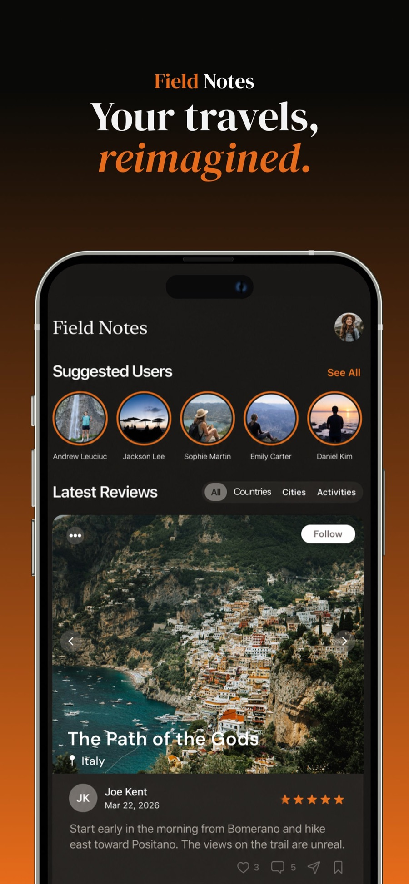
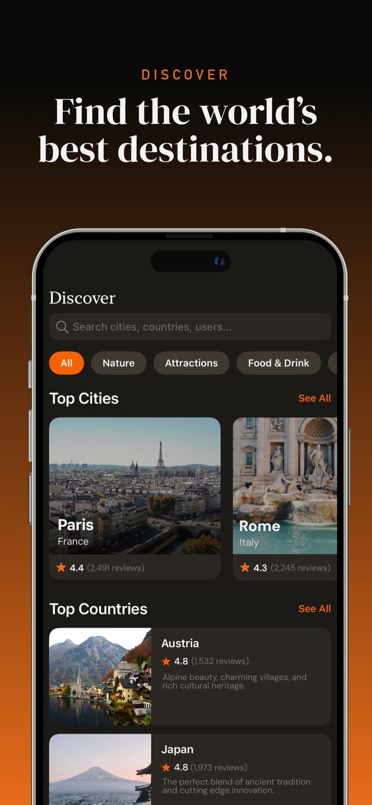
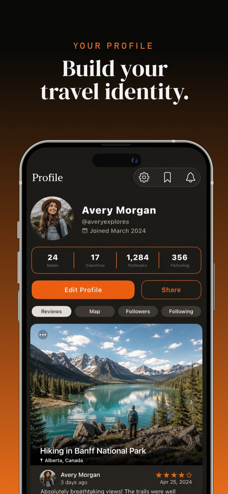

Field Notes
Honest travel reviews from people who actually went. Rate the places you've been across eight categories, and see what the world really thinks.




Field Notes on iPhone: feed, deep reviews, discover, and profile
Overview
Travel content is broken. Somewhere along the way, "where should I go?" became a question answered by sponsored posts, algorithmic feeds, and people whose job is to make everywhere look perfect.
Field Notes takes a different angle. It aggregates real ratings from real travelers across the things that actually matter: safety, food, cost, nightlife, nature, and more. One person's opinion doesn't tell the whole story. But when thousands of people who have actually been somewhere rate it across the same categories, patterns appear and the truth comes through.
It is a native iOS app, and it is live on the App Store. I architected and built everything behind it: the SwiftUI client and the backend.
What it does
Eight scores, not one.
Every place breaks down across eight subcategories, so you see how a city or country actually scores instead of a single blurred average.
- Rate 1 to 5 stars with half-star precision across cost, safety, walkability, transit, nightlife, attractions, food & drink, and nature
- Attach up to 10 photos and videos to any review
- Like, comment, and save reviews from other travelers
Ranked by people, not ads.
Trending cities and top countries are ranked by real traveler reviews, not by who paid for placement. Rankings come from the average rating across every review, with review counts shown so you can see how much weight each score carries.
- Cities and countries ranked by aggregate score
- Filter by what matters to you: nature, food, nightlife, sightseeing
- Star ratings and review counts at a glance
A map of where you've been.
Your profile tracks every place you have reviewed and every country you have explored, with a map of everywhere you have been. Follow people you trust and their reviews show up first in your feed.
- Reviews, countries visited, and a travel map on every profile
- Follow friends and fellow travelers
- A friends-first feed, with popular reviews mixed in
How it's built
Field Notes runs on three tiers: a SwiftUI client, a Fastify API, and a Supabase Postgres database. The client authenticates directly through Supabase Auth, but every read and write (profiles, the feed, likes, saves, follows, and posts) goes through the API, which owns the logic and is the only thing that touches the database. Photos and videos upload straight to Cloudflare R2 through presigned URLs the API issues, so the media bytes never pass through the server. That keeps the API in charge of the real logic while large files stay off its path.
- Swift & SwiftUINative client for iPhone and iPad
- Node.js & FastifyRanking, feed, moderation, push dispatch
- PostgreSQL via SupabasePrimary store, with Row Level Security
- Supabase AuthEmail, Sign in with Apple, Sign in with Google
- Cloudflare R2Photos, videos, and avatars over a CDN
- APNs via edge functionsLike, comment, and follow notifications
- Postgres full-text searchUsers, cities, countries, activities
- Trigger-based aggregationRatings roll up to cities and countries on write
Under the hood
Each place stores materialized average columns updated by Postgres triggers on every post write, so a city page loads instantly instead of recomputing thousands of reviews. Discover ranks those places by their average rating, computed once on write rather than on every read.
The feed is friends-first with popular reviews mixed in, and it works even for someone who just opened the app and follows no one. Guests get a curated popular feed and can browse cities, countries, and profiles before they ever make an account.
The app ships with a full moderation stack: a real EULA, content filtering, in-app reporting and blocking, and an admin workflow to act on reports. It satisfies Apple's Guideline 1.2 for user-generated content and keeps the community clean.
Photos and videos upload straight to Cloudflare R2 and serve back through a CDN, keeping large files off the database and the API path while staying fast worldwide.
Takeaways
- Shipped a real, full-stack product to the App Store solo: iOS, API, database, and media
- Aggregated data beats any single hot take once enough people weigh in
- Leaned heavily on AI, mostly Claude, to write code and work through the architecture
- AI writes far better code when it can reference UI screenshots and a fleshed-out design doc, not just a prompt
Field Notes is live and evolving. You can download it on the App Store.